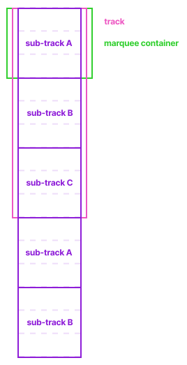

<div class="marquee">
<div class="marquee-container">
<div class="track">
<div class="sub-track">
<img src="images/image4.jpg" class="item">
<img src="images/image5.jpg" class="item">
<img src="images/image6.jpg" class="item">
</div>
<div class="sub-track">
<img src="images/image7.jpg" class="item">
<img src="images/image8.jpg" class="item">
<img src="images/image9.jpg" class="item">
</div>
<div class="sub-track">
<img src="images/image1.jpg" class="item">
<img src="images/image2.jpg" class="item">
<img src="images/image3.jpg" class="item">
</div>
<div class="sub-track">
<img src="images/image4.jpg" class="item">
<img src="images/image5.jpg" class="item">
<img src="images/image6.jpg" class="item">
</div>
<div class="sub-track">
<img src="images/image7.jpg" class="item">
<img src="images/image8.jpg" class="item">
<img src="images/image9.jpg" class="item">
</div>
</div>
</div>
</div>
Let's take a second to understand the structure that makes the marquee responsive and loop seamlessly.
In the diagram below, the marquee container could be of any height (100vh, 10em, 50%, 100px) as long as all of the other heights follow their ratios accordingly.
Paste the following css inside your `<style>` tag, or create a `style.css` sheet and link it inside of the `<head>` tag.
.marquee-container {
width: 100%;
height: 100vh;
margin: 0 auto;
position: relative;
display: flex;
flex-direction: column;
align-items: center;
justify-content: flex-start;
overflow: hidden;
}
.track {
position: absolute;
top: 0vh;
height: 300vh;
display: flex;
flex-direction: column;
align-items: center;
justify-content: flex-start;
animation: marquee_animation 10s linear infinite;
-webkit-animation: marquee_animation 10s linear infinite;
-moz-animation: marquee_animation 10s linear infinite;
gap: 1.5vh;
}
/*
.track:hover {
animation-play-state: paused;
}
*/
.sub-track {
width: 60vw;
min-width: 300px;
max-width: 800px;
height: 100vh;
position: relative;
display: flex;
flex-direction: column;
align-items: center;
justify-content: flex-start;
gap: 1.5vh;
}
.item {
width: 45vh;
height: 30vh;
object-fit: cover;
overflow: hidden;
border-radius: 0.5em;
}
@-webkit-keyframes marquee_animation {
0% {
top: -16.5vh;
}
100% {
top: -300vh;
}
}
@-moz-keyframes marquee_animation {
0% {
top: -16.5vh;
}
100% {
top: -300vh;
}
}
Time to customize!
Insert your own images or text elements, change their dimensions, add or remove items or sub-tracks, change the speed of the animation, pause the track on hover, etc.
Have fun tinkering, if you end up using it on a project, share it with me on Twitter or tag me on TikTok!
`.track:hover {animation-play-state: paused;}`